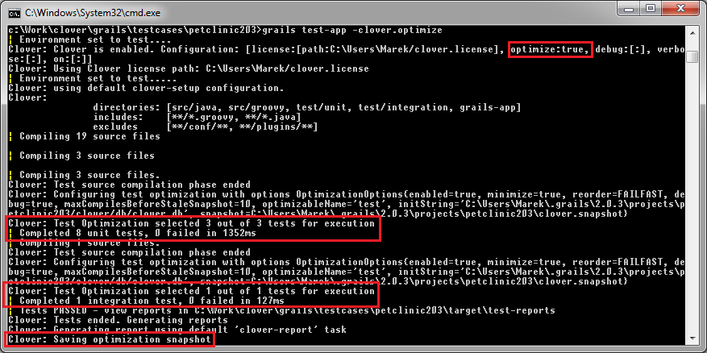
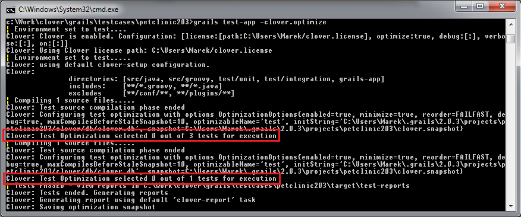
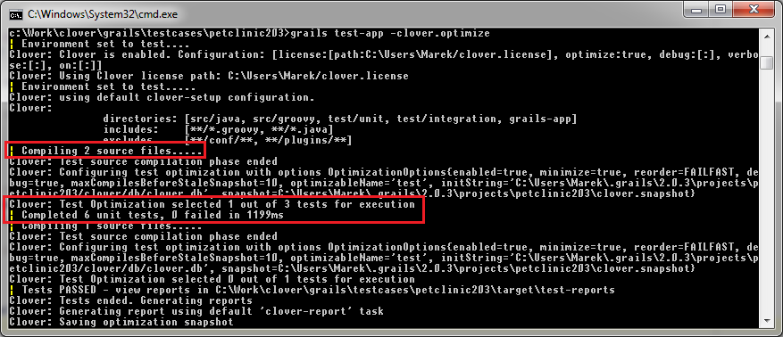

This feature is available since Clover-for-Grails 3.1.10.1.
Follow the steps in this document to set up Clover's Test Optimization, which allows targeted testing of only the code which has changed since the last build. This page contains the basic steps for adding Clover's Test Optimization to a Grails application.
Command line quick start
The quickest possible way to start using Test Optimization in Clover-for-Grails is to run tests with the -clover.optimize option, for instance:
grails test-app -clover.optimize
The -clover.optimize does the following:
- enables Clover instrumentation
- disables clean (note that -clover.on performs full clean by default, unless the -clover.forceClean=false is used)
- analyzes which application and test classes were modified since the last build and selects
appropriate set of tests
- it's achieved by overwriting value of the testTargetPatterns variable from _GrailsTest.groovy script
- stores optimization snapshot after test phase
By default, the snapshot file gets saved to "${projectWorkDir}/clover.snapshot" (the ${projectWorkDir} is "~/.grails/X.X.X/projects/project_name" by default).
This file is needed to optimize subsequent builds. You can also specify an alternative location in clover.snapshotLocation, which can be defined in BuildConfig.groovy or passed from command line, for instance:
clover {
snapshotLocation = "/path/to/clover.snapshot"
}
Test Optimization in action
For the first time you should run a full build in order to make sure that the whole code is instrumented by Clover. You can run:
grails clean grails test-app -clover.optimize
or
grails test-app -clover.on # clover.on forces full clean grails test-app -clover.optimize
The first time Clover Test Optimization is used a full test run will be done. You should see the following log message appear in the console:

If you then rerun the build, without modifying any source files (and ensuring the snapshot file is not deleted) you should see the following:

If a source file (application or test class) is modified in any way (including whitespace changes), and you re-run the build, only test cases that cover the modified file will be run:

By default, the same snapshot file is updated for 10 consecutive builds. On the 10th build, the snapshot file is deleted and recreated, which triggers a full test run.
You can also delete this file manually to force a full test run (note that if snapshot file is stored in default location, the 'grails clean' command does not remove this file).
References